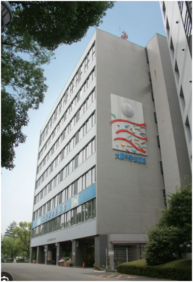
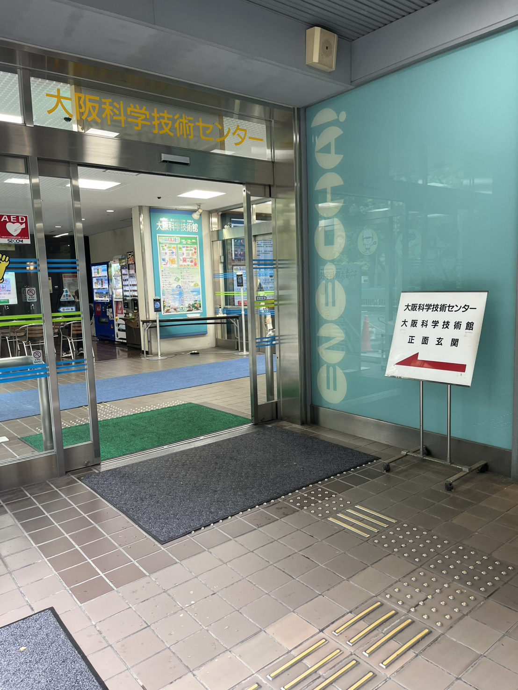
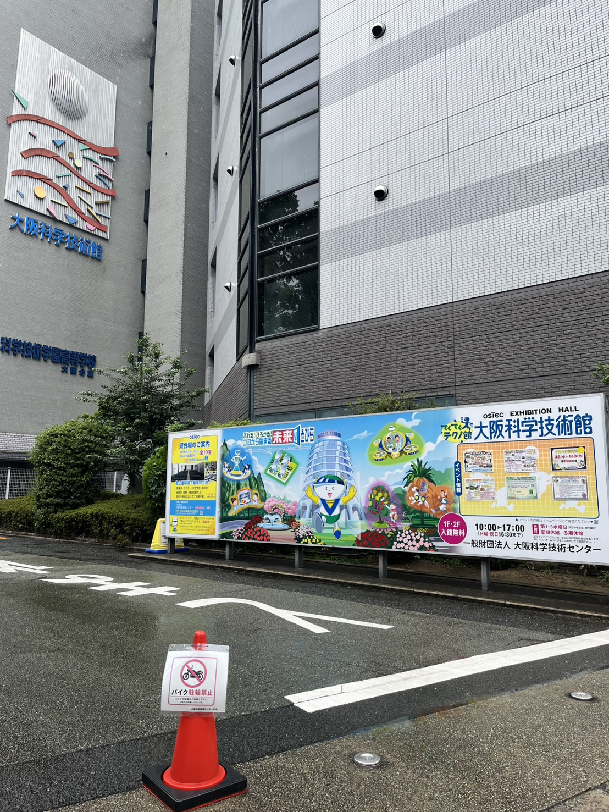
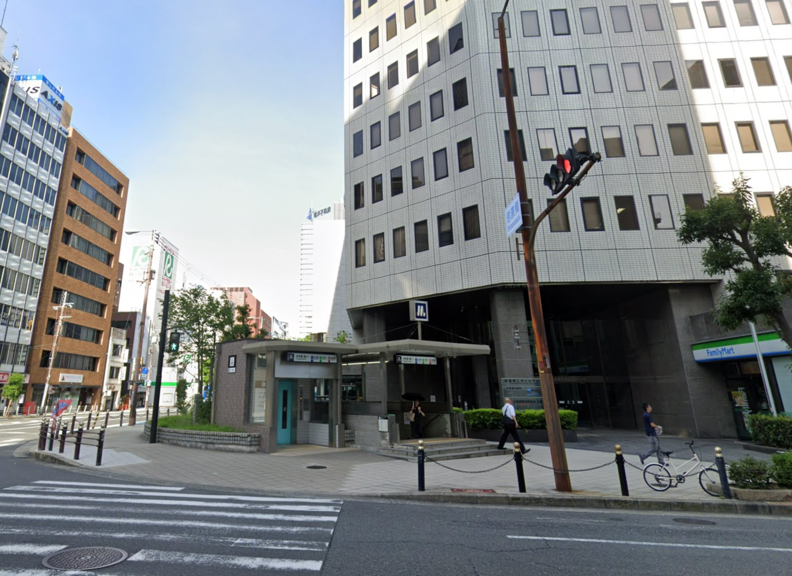
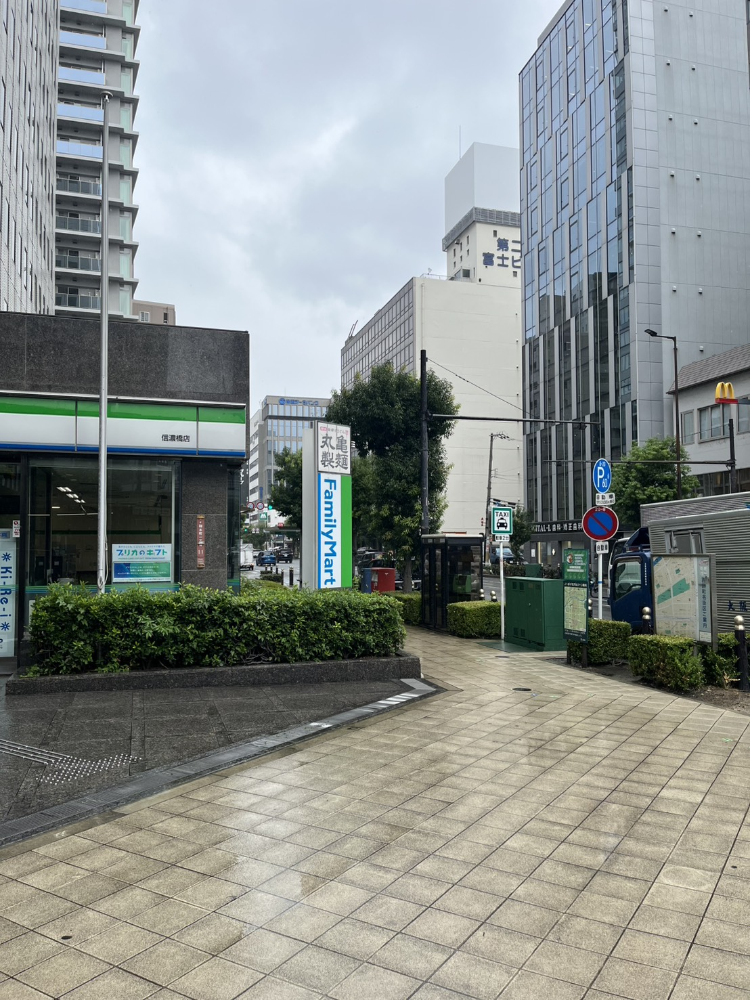
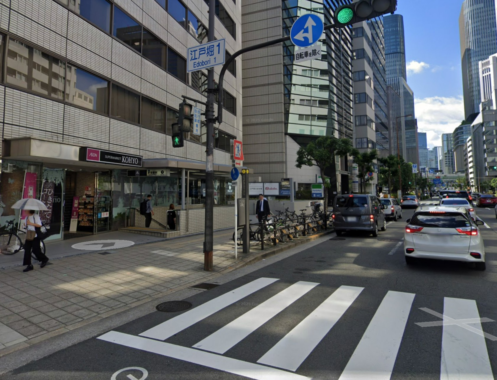
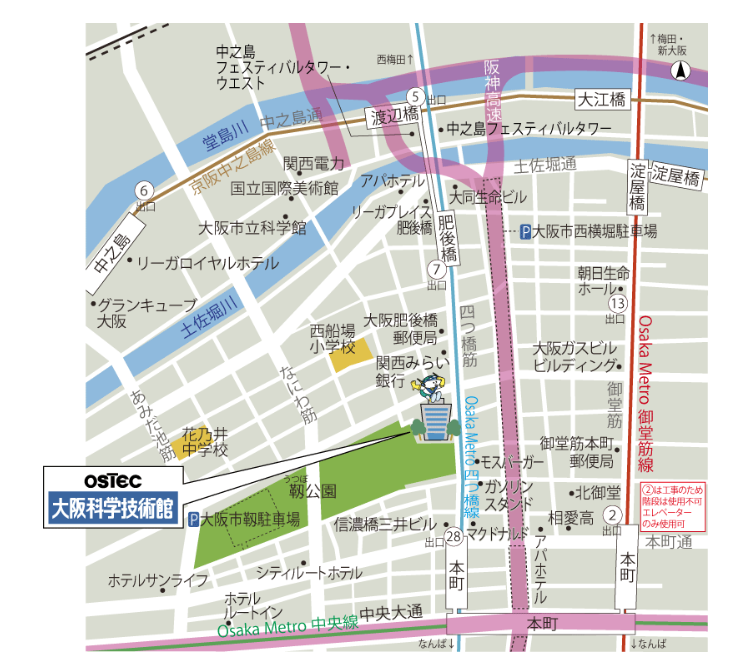

全国キャラバン 大阪会場への道案内
大阪・梅田 → 西梅田（四つ橋線） → 本町駅・肥後橋駅 → 会場（大阪科学技術センター）
9 / 19 2026 SATこの案内の使い方
この案内では、主に下記の２点を説明しています。
- 大阪・梅田の各駅から大阪メトロ四つ橋線西梅田駅への行き方
- 到着駅の四つ橋線本町駅または肥後橋駅から会場までの行き方
西梅田駅からは四つ橋線で1〜2駅、本町駅または肥後橋駅で下車し、駅の出口から会場までは徒歩5〜6分ほどです。
大阪科学技術センター 8階大ホール
大阪市西区靱本町1丁目8番4号
※大阪科学技術センターと大阪科学技術館は同じ建物です。（看板など公式の案内は大阪科学技術館となっているようです。）
※類似名称の大阪市立科学館（中之島）と間違えないでください。



01大阪駅・梅田駅から西梅田駅まで（3つの選択肢）
JR・阪神・阪急のいずれでお越しの場合も、まず大阪メトロ四つ橋線 西梅田駅を目指してください。
大阪メトロ御堂筋線 本町駅からも会場に行けますが道順が少しわかりにくく最寄り駅でもないため、ここでは大阪メトロ四つ橋線 西梅田駅からのルートを案内しています。
-
JR大阪駅から西梅田駅まで
- 大阪駅から西梅田駅までは徒歩5〜7分かかり、経路はやや複雑。
- 【タクシーで直行も可能】大阪駅・桜橋口からタクシーで大阪科学技術センターまで直行も可能。約10〜20分、料金目安1,300円程度（御堂筋の混雑状況による。土曜日日中は緩やかな渋滞の可能性あり）。
※上記は例です。タクシー乗り場は各駅に複数あります。
「西梅田駅への道順がわからない」方はこちら
-
阪神 大阪梅田駅から西梅田駅まで
- 大阪梅田駅から四つ橋線 西梅田駅まで最短。同じ地下街内を移動するので乗り換えが分かりやすい。
- 不慣れな方や複数人での移動におすすめ。
「西梅田駅への道順がわからない」方はこちら
-
阪急 大阪梅田駅から西梅田駅まで
- 大阪梅田駅から西梅田駅まで徒歩でやや距離あり（地上・地下を経由）。
「西梅田駅への道順がわからない」方はこちら
※上記の参考リンクはいずれも個人ブログのため、内容が変わったり削除される場合があります。
02西梅田 → 本町・肥後橋まで（四つ橋線で1〜2駅）
- Osaka Metro 四つ橋線 西梅田駅から住之江公園方面行きに乗り、本町（1駅）または肥後橋（2駅）で下車。
03本町または肥後橋から会場へ
本町駅 28号出口から出て、四つ橋筋を北へ徒歩約5分。信濃橋三井ビルの西側を進み、靱公園の東端にある大阪科学技術センターへ。


肥後橋駅 7号出口から出て、四つ橋筋を南へ徒歩約6分。大阪肥後橋郵便局・関西みらい銀行の西側を通り、大阪科学技術センターへ。

図で確認する：本町駅・肥後橋駅と会場の位置関係

※上記の徒歩にかかる時間はAI調べの目安です。ルート検索のアプリなどでは、肥後橋の方が短い時間で着く案内になることが多いようです。
到着したら、看板は「大阪科学技術館」ですが、そこが会場（大阪科学技術センター）です。入口を入って右側にエレベーターがあります。